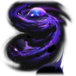

IX
Aeon of NihilityLore
IX adalah Aeon yang memimpin Path of Nihility, mewakili filosofi bahwa segala keberadaan bersifat sia-sia dan multiverse pasti berakhir menjadi nothingness mutlak. Segala tindakan, kehidupan, Path, dan bahkan Aeon lain dianggap tak berarti, sehingga IX sepenuhnya apatis dan tidak pernah berinteraksi dengan Aeon manapun — bahkan dalam Swarm Disaster.
Keberadaan IX adalah misteri terbesar di antara Aeon-Aeon. Bentuknya selalu tersembunyi di balik lapisan kabut tebal. Hanya mendekati IX saja sudah membuat makhluk hidup mati rasa dan putus asa. Dalam Simulated Universe, kemunculannya disertai suara eerie, dan Herta mencatatnya sebagai "mudah dibaca tapi membosankan".
Bayangan IX (Shadows of IX) seperti "Black Great Sun" pernah mengancam planet Izumo dan Takamagahara, menciptakan Self-Annihilators yang menghancurkan peradaban. Horizon of Existence adalah ruang monokrom dengan matahari gelap sebagai manifestasi Nihility. Sin Thirsters adalah makhluk mati yang bangkit dari kedalaman, mengulang tindakan sia-sia karena obsesi Pathstrider.
Nama "IX" terinspirasi kartu Tarot The Hermit (IX), melambangkan isolasi. Pronoun: THEY/THEM. Quote ikonik: "You may gaze deep into the vast grandeur of the stars, but do not glance at the abyss of the void... for it holds nothing except for the ability to make mortals lose all reason and thought." — Murong, Doctor of Chaos.
Emanator (Self-Annihilators)
Emanator Nihility bersifat unik dan accidental karena IX terlalu apatis untuk memilih siapa pun secara sengaja. Nihility menyelimuti semua makhluk secara setara, tapi hanya yang masuk bayangan IX dan bertahan erosi mental/fisik yang menjadi Self-Annihilators atau Emanator sejati.
Self-Annihilators kehilangan makna eksistensi, merantau kosmos sendirian dengan degradasi tubuh (kulit seperti kayu busuk) dan pikiran (hilang ingatan, lenyap ke black hole dalam mimpi). Yang bertahan memiliki self-annihilation tak terbatas, menjadi "bayangan IX di dunia nyata".
Emanator terkenal: Acheron (Raiden Bosenmori Mei), Self-Annihilator playable (Lightning Nihility) yang menyamar sebagai Galaxy Ranger. Lahir di Izumo, ia hancurkan Black Great Sun, bisa seret orang ke Horizon of Existence. Pedangnya tak pernah ditarik penuh.
Lainnya termasuk Leader of Lepismat Civilization dan Self-Annihilator from Xuange. Doctors of Chaos mencoba obati Nihility dengan Sealing Wax of Aeons, Chaos Trametes, dll. Tidak ada Emanator baru confirmed hingga update terbaru.
Penampilan
IX digambarkan sebagai blob ungu raksasa seperti gumpalan nebula magenta dan biru, dibungkus gas ungu tebal menyerupai kabut atau black hole. Dua mata putih besar menatap kosong dari pusaran tersebut.
Di sekitarnya, asteroid, planet, dan benda langit tertarik ke dalam pusaran, melambangkan daya tarik ketiadaan. Bentuk ini merepresentasikan angka Romawi IX (9) dan selalu diselimuti kabut misterius, membuatnya sulit dilihat jelas.
Hanya mendekati IX saja sudah cukup membuat makhluk hidup merasa mati rasa (numb) dan putus asa (dejected), karena kehadirannya memancarkan esensi Nihility yang menggerogoti jiwa.